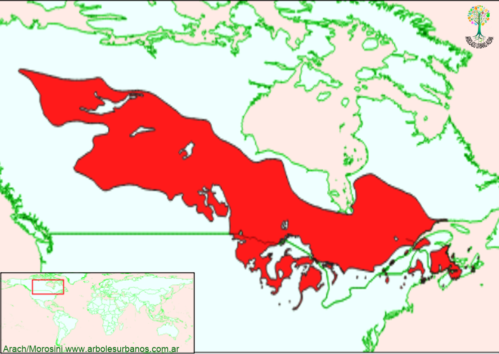

Click en las imágenes para ampliar

{kind=link}
{kind=link}
{kind=link}
{kind=link}
Pino cola de ratón
N OMBRE CIENTÍFICO : Pinus banksiana
F AMILIA BOTÁNICA : Pináceas
O RIGEN : Esta especie tiene una amplia zona de distribución natural, en el norte de Estados Unidos y el centro norte de Canadá, desde la costa atlántica hasta los territorios del noroeste del Canadá. Esto hace que esté presente en distintas condiciones ecológicas, desde climas marítimos en la costa del Atlántico norte, hasta climas extremos continentales, con inviernos secos y temperaturas muy bajas; es por eso que lo acompañan distintas especies como el pino blanco del este, el roble rojo del norte, el álamo balsámico, el abedul de papel, piceas, tamarack, llegando a hibridarse con el pino Contorta en el extremo de su distribución natural. Crece tanto en los bosques boreales como en el límite de la tundra en altitudes que van desde el nivel del mar hasta los 750 metros sobre el nivel del mar. Por esto es que aparece en distintas formas desde ejemplares achaparrados, en los límites de la tundra, hasta formas arbóreas más esbeltas, cuando forma rodales puros, colonizados luego de incendios.
D ESCRIPCIÓN GENERAL : Este pino es de talla de pequeña o mediana, de porte algo torcido o desgarbado, normalmente puede alcanzar entre 10 y 20 metros y diámetros a la altura del pecho de 40 cm., aunque se citan ejemplares de 27 metros de altura y 90 cm. de diámetro. Su copa tiene forma de globosa a irregular, a veces algo aparasolada debido a sus ramas delgadas y torcidas que forman ángulos agudos con respecto del tronco. Tiene una corteza marrón anaranjada, compuesta por escamas cuando joven y de color gris cuando madura, agrietada longitudinalmente.
HOJAS: Posee hojas acículares, de 2 a 5 cm. de largo, están reunidas en fascículos de dos, son algo retorcidas y de color verde amarillento.
E STRÓBILOS : los masculinos se encuentran en grupos en los extremos de las ramas, son de color amarillento. Los femeninos son conos de color marrón anaranjado cuando son jóvenes, de hasta 5 cm de largo ovalados y torcidos. Estos conos pueden estar muchos años cerrados, se abren con temperaturas extremas (tanto de calor como de frío), por eso se los puede ver cerrados en ramas maduras, con el correr del tiempo los conos van adquiriendo una coloración grisácea.
R EPRODUCCIÓN : Naturalmente su reproducción es por semillas, dadas las características de los conos, estos se abren luego de los incendios, lo que hace que sea una especie que regenera principalmente, lugares afectados por incendios. Fuera de su área de distribución natural, lo más común es multiplicarlo por semillas.
Usos: En la región tiene muy pocos usos, se lo utilizó experimentalmente para la producción de madera. Debido a su forma y sus diámetros comúnmente pequeños, en su lugar de origen su madera es utilizada para diversos tipos de construcciones rurales, postes telefónicos, puntales de minas, etc. Su madera es de textura gruesa, moderadamente liviana y resinosa. Además de su madera se lo utiliza en otros lugares para la recuperación y estabilización de terrenos, ya que puede crecer en distintos tipos de suelos, soportar muy bien las bajas temperaturas y tener pocas exigencias en el riego.
P ARTICULARIDADES : Su nombre científico es en honor al científico Sir Joseph Banks (1743-1820), fue un naturalista, explorador y botánico inglés que viajó junto con Cook en su primer gran viaje (1768-1771) y presidente de la Royal Society.